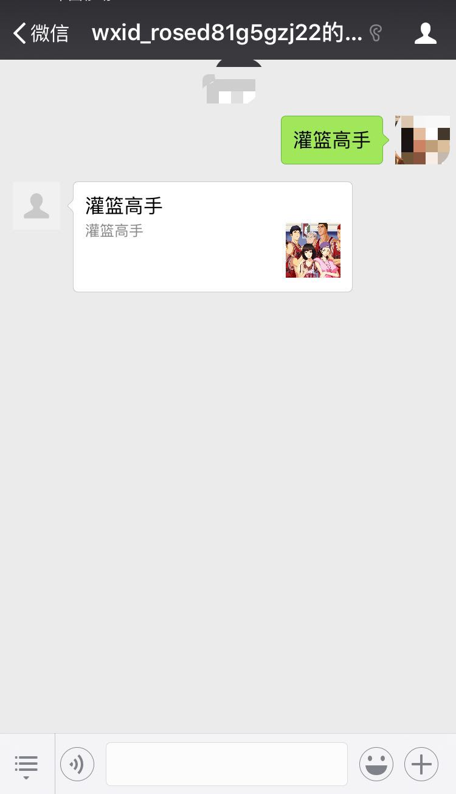

前言：
回顾上一节服务器配置的内容，我们已经可以自己完成公众号服务器的配置。配置完成之后，我们就可以通过调用的方式，完成对消息管理的处理。当用户关注公众号或者发送消息的时候，我们应该启用默认回复，要不然用户得不到回应，
从而导致丢失体验。所以这一章节，我们将通过消息管理的方式，对用户的信息进行处理，完成公众号消息回复功能，实现公众号与用户之间的完整对话。
了解:
微信公众平台对信息做了比较清晰的分类，最基本的包括请求（Request）和响应（Response）两大类信息，这两类信息有分为文字、语音、图片等格式。Senparc.Weixin.MP提供了MessageHandler消息处理类，这些类型在以枚举的方式区分，
同时根据严格命名规则命名了所有类型的RequestMessage和ResponseMessage。在Senparc里也详细说明了如何这个类的
开始：
第一步：
新建一个UserMessageHandler.cs，需要继承Senparc.Weixin.MP.MessageHandlers<TC>这个抽象类,并重写所有方法：
public class UserMessageHandler : MessageHandler<UserMessageContext>
{
/// <summary>
/// 构造函数
/// </summary>
/// <param name="inputStream">构造函数的inputStream用于接收来自微信服务器的请求流（如果需要在外部处理，这里也可以传入XDocument）</param>
/// <param name="postModel">微信公众服务器Post过来的加密参数集合（不包括PostData）</param>
public UserMessageHandler(Stream inputStream, PostModel postModel)
: base(inputStream, postModel)
{
}
public override IResponseMessageBase DefaultResponseMessage(IRequestMessageBase requestMessage)
{
/* 所有没有被处理的消息会默认返回这里的结果
*/
var responseMessage = this.CreateResponseMessage<ResponseMessageText>();//ResponseMessageText也可以是News等其他类型
responseMessage.Content = "这条消息来自DefaultResponseMessage。";
return responseMessage;
}
}using Senparc.Weixin.Context;
using Senparc.Weixin.MP.Entities;
using System;
using System.Collections.Generic;
using System.Linq;
using System.Web;
namespace WeiXinHandler
{
public class UserMessageContext: MessageContext<IRequestMessageBase, IResponseMessageBase>
{
public UserMessageContext()
{
/*
* 注意：即使使用其他类实现IMessageContext，
* 也务必在这里进行下面的初始化，尤其是设置当前时间，
* 这个时间关系到及时从缓存中移除过期的消息，节约内存使用
*/
base.MessageContextRemoved += UserMessageContext_MessageContextRemoved;
}
/// <summary>
/// 当上下文过期，被移除时触发的时间
/// </summary>
/// <param name="sender"></param>
/// <param name="e"></param>
void UserMessageContext_MessageContextRemoved(object sender, Senparc.Weixin.Context.WeixinContextRemovedEventArgs<IRequestMessageBase, IResponseMessageBase> e)
{
/* 注意，这个事件不是实时触发的（当然你也可以专门写一个线程监控）
* 为了提高效率，根据WeixinContext中的算法，这里的过期消息会在过期后下一条请求执行之前被清除
*/
var messageContext = e.MessageContext as CustomMessageContext;
if (messageContext == null)
{
return;//如果是正常的调用，messageContext不会为null
}
//TODO:这里根据需要执行消息过期时候的逻辑，下面的代码仅供参考
//Log.InfoFormat("{0}的消息上下文已过期",e.OpenId);
//api.SendMessage(e.OpenId, "由于长时间未搭理客服，您的客服状态已退出！");
}
}
}重写的方法对应了接收不同的Request类型，构造函数的inputStream用于接收来自微信服务器的请求流
第二步：
基本用户不同类型的请求，比如用户向我们发送一条信息，那么会最终会调用OnTextRequest这个方法，所以在不同的重写方法内，实现自己的方法。
比如：我们对于文字（Text）信息进行这样的处理，在UserMessageHandler中我们可以重写方法OnTextRequest:
public override IResponseMessageBase OnTextRequest(RequestMessageText requestMessage)
{
var responseMessage = base.CreateResponseMessage<ResponseMessageText>();
responseMessage.Content = "您刚刚发送了文字信息：" + requestMessage.Content; //requestMessage.Content即用户发过来的文字内容
return responseMessage;
}对于图片信息进行这样的处理，在UserMessageHandler中我们可以重写方法OnImageRequest
/// <summary>
/// 处理图片请求
/// </summary>
/// <param name="requestMessage"></param>
/// <returns></returns>
public override IResponseMessageBase OnImageRequest(RequestMessageImage requestMessage)
{
var responseMessage = CreateResponseMessage<ResponseMessageNews>();
responseMessage.Articles.Add(new Article()
{
Title = "您刚才发送了图片信息",
Description = "您发送的图片将会显示在边上",
PicUrl = requestMessage.PicUrl,
Url = "https://www.cnblogs.com/i3yuan/"
});
return responseMessage;
}对于语音信息进行这样的处理，在UserMessageHandler中我们可以重写方法OnVoiceRequest
/// <summary>
/// 处理语音请求
/// </summary>
/// <param name="requestMessage"></param>
/// <returns></returns>
public override IResponseMessageBase OnVoiceRequest(RequestMessageVoice requestMessage)
{
//获取公众号
AccessTokenResult account = Senparc.Weixin.MP.CommonAPIs.CommonApi.GetToken(AppId, AppSecret);
var responseMessage = CreateResponseMessage<ResponseMessageMusic>();
//上传缩略图
var uploadResult = Senparc.Weixin.MP.AdvancedAPIs.MediaApi.UploadTemporaryMedia(account.access_token, UploadMediaFileType.image,
Server.GetMapPath("~/Images/Logo.jpg"));
//设置音乐信息
responseMessage.Music.Title = "天籁之音";
responseMessage.Music.Description = "播放您上传的语音";
responseMessage.Music.MusicUrl = "http://sdk.weixin.senparc.com/Media/GetVoice?mediaId=" + requestMessage.MediaId;
responseMessage.Music.HQMusicUrl = "http://sdk.weixin.senparc.com/Media/GetVoice?mediaId=" + requestMessage.MediaId;
responseMessage.Music.ThumbMediaId = uploadResult.media_id;
return responseMessage;
} 对于视频信息进行这样的处理，在UserMessageHandler中我们可以重写方法OnVideoRequest
/// <summary>
/// 处理视频请求
/// </summary>
/// <param name="requestMessage"></param>
/// <returns></returns>
public override IResponseMessageBase OnVideoRequest(RequestMessageVideo requestMessage)
{
var responseMessage = CreateResponseMessage<ResponseMessageText>();
responseMessage.Content = "您发送了一条视频信息，ID：" + requestMessage.MediaId;
return responseMessage;
}对于地理信息进行这样的处理，在UserMessageHandler中我们可以重写方法OnLocationRequest
/// <summary>
/// 处理位置请求
/// </summary>
/// <param name="requestMessage"></param>
/// <returns></returns>
public override IResponseMessageBase OnLocationRequest(RequestMessageLocation requestMessage)
{
var locationService = new LocationService();
var responseMessage = locationService.GetResponseMessage(requestMessage as RequestMessageLocation);
return responseMessage;
}对于链接信息进行这样的处理，在UserMessageHandler中我们可以重写方法OnLinkRequest
/// <summary>
/// 处理链接消息请求
/// </summary>
/// <param name="requestMessage"></param>
/// <returns></returns>
public override IResponseMessageBase OnLinkRequest(RequestMessageLink requestMessage)
{
var responseMessage = ResponseMessageBase.CreateFromRequestMessage<ResponseMessageText>(requestMessage);
responseMessage.Content = string.Format(@"您发送了一条连接信息：
Title：{0}
Description:{1}
Url:{2}", requestMessage.Title, requestMessage.Description, requestMessage.Url);
return responseMessage;
}第三步：
在Action中使用MessageHandler，返回对用户的处理，在上一节中我们已经新建了WXController.cs,在其中通过Post的方式处理用户的请求
[HttpPost]
[ActionName("Index")]
public Task<ActionResult> Post(PostModel postModel)
{
return Task.Factory.StartNew<ActionResult>(() =>
{
if (!CheckSignature.Check(postModel.Signature, postModel.Timestamp, postModel.Nonce, Token))
{
return new WeixinResult("参数错误！");
}
var messageHandler = new UserMessageHandler(Request.InputStream);
messageHandler.Execute(); //执行微信处理过程
return new FixWeixinBugWeixinResult(messageHandler);
}).ContinueWith<ActionResult>(task => task.Result);
}
}messageHandler.Execute();用于执行整个信息处理过程，其中会调用重写的OnxxRequest方法
效果：
测试发送文本
通过测试公众号，我们可以发现，当我们发送文本的时候，系统会对用户的信息进行处理，完成公众号消息回复功能，实现公众号与用户之间的完整对话。
测试发送图文消息

public override IResponseMessageBase OnTextRequest(RequestMessageText requestMessage)
{
var responseMessage = CreateResponseMessage<ResponseMessageNews>();
responseMessage.Articles.Add(new Article()
{
Title = "灌篮高手",
Description = "灌篮高手",
PicUrl = "http://images.cnblogs.com/cnblogs_com/i3yuan/1462639/o_timg%20(1).jpg",
Url = "https://www.cnblogs.com/i3yuan/"
});
return responseMessage;
}总结：
1.通过MessageHandler的简单处理，我们就可以进行对用户文本消息的处理，完成公众号与用户的会话
2.发送不同的消息，处理不同的回复，实现更多类型的消息回复